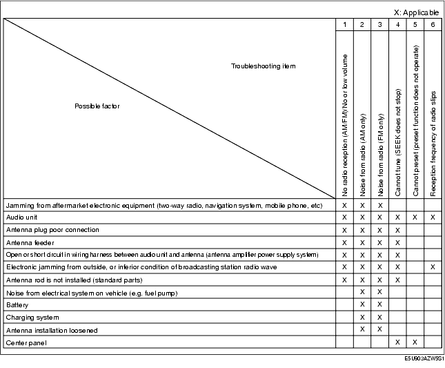

Foreword [Radio]
- • If the case location, time, and broadcasting station etc. can be specified through interview with the customer, there is the possibility that the signal reception environment is the cause of the problem.
- • Perform confirmation of symptom and evaluate under the conditions that customer reported (location, time, broadcasting station etc.). If this is not possible, perform it under equivalent conditions.
- • Before inspection or repair, record the broadcasting stations that customer has preset and reset them accordingly after the inspection or repair. Adjust the clock too.
Troubleshooting Index
Quick Diagnostic Chart (Radio)
